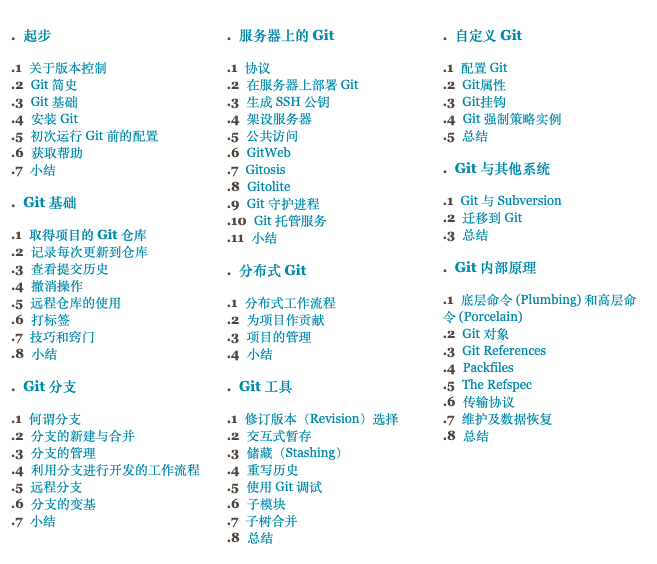
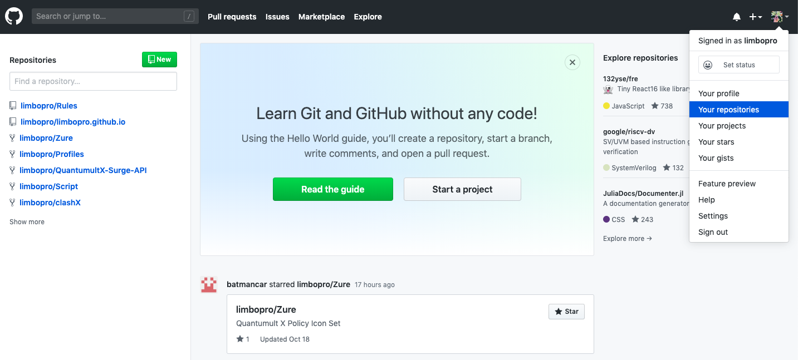
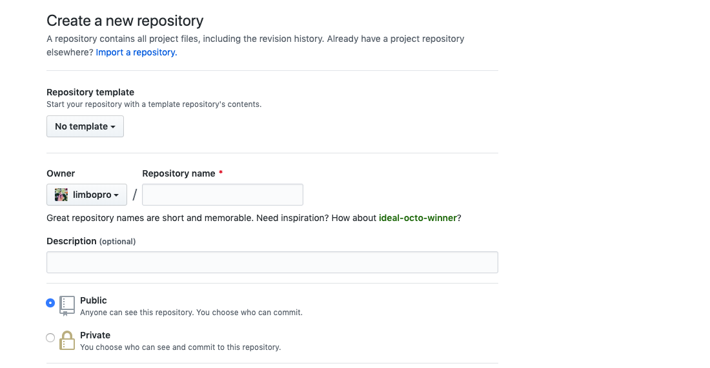
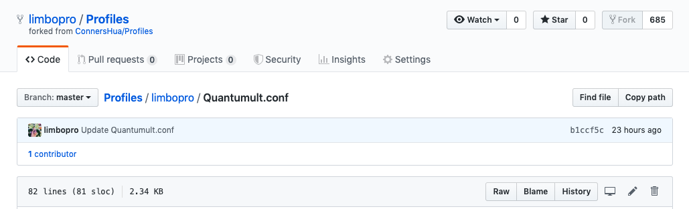
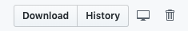
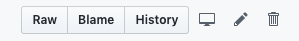
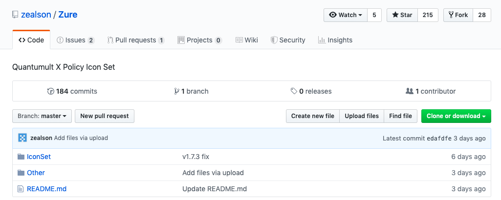
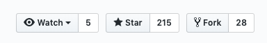
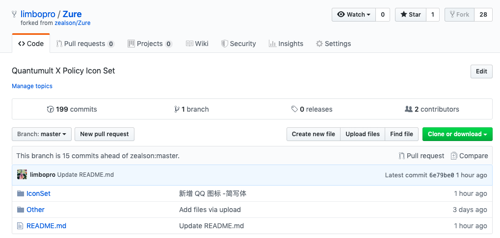
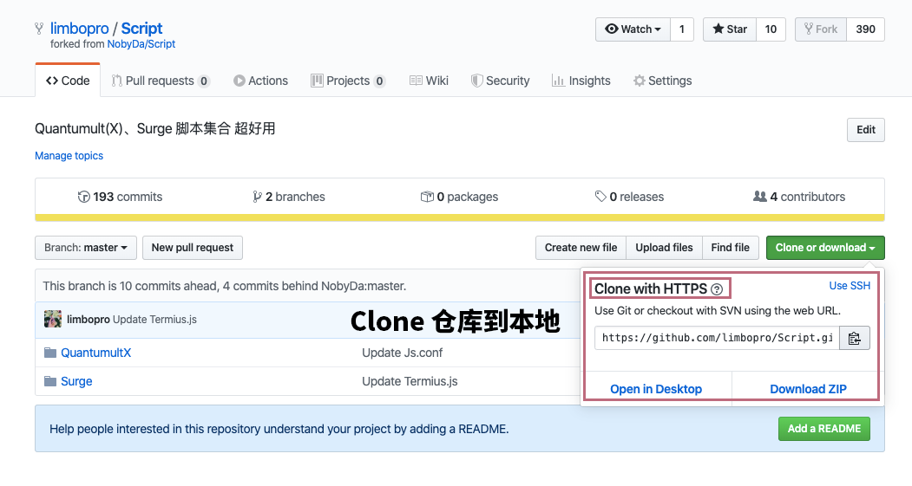

I. 本文概要
就算是素人玩家，也可以玩到飞起。
1.Github 是什么，它可以做什么
2.开局新建一个账号
3.装备全靠捡
4.本地/远程/合并/更新/仓库就是一切
以上。
本文隶属于 实用工具/科学上网 分类，点击分类名称可以查看更多相关文章；
II. 近期更新
03.18.2020
GitHub Mobile(手机端)结束长达两个月的Beta阶段，现已提供下载；
https://github.com/mobile
III. Github 是什么
GitHub是通过Git进行版本控制的软件源代码托管服务平台，由GitHub公司的开发者Chris Wanstrath、PJ Hyett和Tom Preston-Werner使用Ruby on Rails编写而成。 GitHub同时提供付费账户和免费账户。 维基百科
IV. Github /Git 深入学习资料
从素人到大神，一步到位。
学习资料

https://git-scm.com/book/zh/v1 Git 工具中文使用指南；或可下载 .equb丨.mobi丨.pdf 放在平板或手机 重点学习
http://rogerdudler.github.io/git-guide/index.zh.html git - 简明指南 素人入门学习指南
V. Github 可以用来做什么
新手可以把Github理解为一个云盘，托管你的代码文件甚至种子，可以上传图片/视频/任意格式支持（似乎是）。
VI. Github 注册
注册步骤及建议
0.https://github.com/join?source=header；
1.建议使用Gmail进行注册；
2.密码/Password 密码设置确保至少15个字符或至少8个字符（包括数字和小写字母）；
3.名字/Username 用户名只能包含字母数字字符或单个连字符，而不能以连字符开头或结尾；
4.如果英语不行可以使用谷歌翻译：https://translate.google.com/?hl=zh-CH；
注册成功后

页面右上角点击你的头像可以分别看到：
Your profile / 你的个人资料
Your repositories /你的仓库
Your projects /你的项目
Your stars /你加星（类似于favorite）的库或项目
Your gists /我没用过
这个页面请稍微花些时间熟悉一下，这样基本上就可以掌握各个模块的位置；
VII. 仓库的结构
repositories 即仓库集，大家口中所谓Repo即仓库；
via https://github.com/limbopro/Script
如上图，一个仓库的结构及功能介绍（Fork后，也是自己的库）；点击库所属用户名，你可看到他的所有公开仓库资源，也可切换当前仓库的分支查看分支内容（很多大佬会隐藏主要分支，所以需要自己手动切换一下分支才能查看）；
VIII. 如何新建一个仓库
Your repositories，仓库，顾名思义就是存放东西的地方；新手可能一下子不需要理解它神奇的地方，只管先把它当做云盘即可。
操作步骤
1.头像左边的 +号，点击new repository，即可开始新建；

2.填写仓库名称Repository name及关于仓库的描述Description；
3.点击Create repository 按钮完成仓库的创建；
4.好了，开搞；
功能介绍
Create new file / 创建文件（*创建新文件时在文件名的后面加一斜杆/即可把该文件变成文件夹）
Upload file / 上传文件（*似乎可以上传任意格式文件，限制单个文件100MB以内，关于大小及磁盘配额等相关问题可参考：https://help.github.com/cn/articles/what-is-my-disk-quota）
Find file / 查找文件
如何编辑/下载某个文件
1.进入该仓库 Repository，找到该文件，点击；

下载文件

上图，我从花花那里Fork了一个仓库，里面有各种软体的分流规则；这里以，Quantumult.conf举例，找到RAW或DOWNLOAD按钮，点击，即可跳转到下载链接；
该下载链接是可以直接外部调用的；他们大都以raw.githubusercontent.com开头，举例Quantumult.conf的下载链接是https://raw.githubusercontent.com/limbopro/Profiles/master/limbopro/Quantumult.conf，所对应的仓库位置是https://github.com/limbopro/Profiles/blob/master/limbopro/Quantumult.conf；（发现小小的区别了吗？如果别人给你下载链接，你可以反向找到它所在仓库的位置，并进行Fork，Star等操作；）
编辑文件

如需编辑，找到那个类似编辑铅笔的图标按钮；
以上；
新建仓库的功能基本上就介绍这么多；
IX. fork 他人仓库
1.Fork，进入任意他人的仓库，找到Fork按钮，点击即可；

2.以 https://github.com/zealson/Zure 仓库举例；

3.即刻拥有；

通俗释疑
Watch，字面意思，观察，查看；
Star，类似关注或点赞；
Fork，相当于你自己有了一份原项目的拷贝，当然这个拷贝只是针对当时的项目文件，如果后续原项目文件发生改变，你必须通过其他的方式去同步。（后文有说；）
Github 相关基础知识介绍完毕。
以上。
以下教程如有疑问可先预习 git - 简明指南 或 Git 工具中文使用指南 ，理解会更透彻。
X. fork 后如何同步上游仓库新更新内容？
Github进行fork后如何与原仓库同步：重新fork很省事，但不如反复练习版本合并。
Fork 了一些著名的仓库后，上游仓库近期又有了更新该怎么使fork后的仓库与上游仓库保持同步，而不会丢失对本地仓库做的修改？如下：
24.11.2019 更新
安装 Git
以在Mac 操作下举例，先安装 Git ，然后打开终端应用程序；Windows 系统请先安装 Git Bash；最后 PUSH 的时候会需要你输入你的Github 用户名（是什么？参考本文关于 仓库结构 的说明），以及登录密码；
克隆仓库到本地
又称作检出仓库：可参考：2.5 Git 基础 - 远程仓库的使用；

[email protected]:/home/# git clone https://github.com/limbopro/Script.git注意：https://github.com/limbopro/Script.git 是我 fork 后的远程仓库地址，你fork后的远程仓库地址请以你的为准；
检查远程仓库配置
List the current configured remote repository for your fork.
列出您的fork的当前配置的远程仓库及其路径；
[email protected]:/home/Script# git remote -v #您的fork的当前配置的远程仓库。
origin https://github.com/limbopro/Script.git (fetch)
origin https://github.com/limbopro/Script.git (push)如果只有上面2行，说明你未设置 upstream （中文叫：上游仓库/代码库）。
配置上游仓库
Specify a new remote upstream repository that will be synced with the fork.
上游仓库一般指定为我们所Fork的对象；例如在这里的上游仓库指的是：https://github.com/NobyDa/Script.git；
[email protected]:/home/Script# git remote add upstream https://github.com/NobyDa/Script.git检查远程仓库配置
Verify the new upstream repository you've specified for your fork.
确认上游仓库是否配置完毕；
[email protected]:/home/Script# git remote -v
origin https://github.com/limbopro/Script.git (fetch)
origin https://github.com/limbopro/Script.git (push)
upstream https://github.com/NobyDa/Script.git (fetch)
upstream https://github.com/NobyDa/Script.git (push)拉取上游仓库更新
Fetch the branches and their respective commits from the upstream repository. Commits to master will be stored in a local branch, upstream/master.
抓取上游仓库的更新到本地，并提交这些更新内容到本地仓库。
[email protected]:/home/Script# git fetch upstream
remote: Enumerating objects: 29, done.
remote: Counting objects: 100% (29/29), done.
remote: Compressing objects: 100% (4/4), done.
remote: Total 20 (delta 16), reused 20 (delta 16), pack-reused 0
展开对象中: 100% (20/20), 完成.
来自 https://github.com/NobyDa/Script
abd7a76..2291d5d master -> upstream/master切换到主分支
Check out your fork's local master branch.
切换到您的fork的本地主分支；可参考：Git 分支 - 何谓分支 以及 Git 分支 - 分支的新建与合并；
[email protected]:/home/Script# git branch #列出当前有多少分支
* master
[email protected]:/home/Script# git checkout master #切换到 master 主分支
已经位于 'master'
您的分支与上游分支 'origin/master' 一致合并上游更新
Merge the changes from upstream/master into your local master branch. This brings your fork's master branch into sync with the upstream repository, without losing your local changes.
将更改从上游/主服务器合并到本地主服务器分支。 这使fork的master分支与上游仓库同步，而不会丢失本地更改。
[email protected]:/home/Script# git merge upstream/master
Merge made by the 'recursive' strategy.
Surge/JS/KuWoMusicDownload.js | 9 +++++++--
1 file changed, 7 insertions(+), 2 deletions(-)推送合并后的更新
PUSH 合并后的更新到远程 master 分支上，PUSH 后，查看你的远程仓库即可看到已经把上游仓库的更新合并到自己Fork后的仓库了；
[email protected]:/home/Script# git push origin master
Username for 'https://github.com': limbopro
Password for 'https://[email protected]':
对象计数中: 4, 完成.
压缩对象中: 100% (4/4), 完成.
写入对象中: 100% (4/4), 426 bytes | 426.00 KiB/s, 完成.
Total 4 (delta 3), reused 0 (delta 0)
remote: Resolving deltas: 100% (3/3), completed with 3 local objects.
To https://github.com/limbopro/Script.git
3736a26..78745c8 master -> master小问题
fork 后如何同步上游仓库新更新内容到此结束；如果出现问题不能合并更新，或PUSH，可在执行 git push 前运行 git status 命令查看哪些文件已修改但未提交到暂存区，并使用 git add [finename] 将这些文件的修改状态进行跟踪；完全指南可参考：2.2 Git 基础 - 记录每次更新到仓库
[email protected]:/home/Script# git status
位于分支 master
您的分支领先 'origin/master' 共 2 个提交。
（使用 "git push" 来发布您的本地提交）
无文件要提交，干净的工作更多疑问参阅：Git 分支 或本文 Github /Git 深入学习资料 部分；
以上。
XI. Git 常用命令集
检出仓库：$ git clone git://github.com/limbopro/Script.git
查看远程仓库：$ git remote -v #刚刚已经用过了
添加远程仓库：$ git remote add [name] [url] #刚刚已经用过了
删除远程仓库：$ git remote rm [name]
修改远程仓库：$ git remote set-url --push [name] [newUrl]
拉取远程仓库：$ git pull [remoteName] [localBranchName] # 与fetch 有所区别
推送远程仓库：$ git push [remoteName] [localBranchName]
查看本地分支：$ git branch #一般默认为 master
查看远程分支：$ git branch -r
创建本地分支：$ git branch [name] ----注意新分支创建后不会自动切换为当前分支
切换分支：$ git checkout [name]
创建新分支并立即切换到新分支：$ git checkout -b [name]
删除分支：$ git branch -d [name] ---- -d选项只能删除已经参与了合并的分支，对于未有合并的分支是无法删除的。如果想强制删除一个分支，可以使用-D选项
合并分支：$ git merge [name] ----将名称为[name]的分支与当前分支合并
查看当前状态：$ git status #同步上游仓库更新时会常用到
提交：$ git commit #合并更新后，提交到远程仓库会用到
查看所有的分支：$ git branch -a
查看远程所有分支：$ git branch -r
**查看、添加、提交、删除、找回，重置修改文件**
git help <command> # 显示command的help
git show # 显示某次提交的内容 git show $id
git co -- <file> # 抛弃工作区修改
git co . # 抛弃工作区修改
git add <file> # 将工作文件修改提交到本地暂存区
git add . # 将所有修改过的工作文件提交暂存区
git rm <file> # 从版本库中删除文件
git rm <file> --cached # 从版本库中删除文件，但不删除文件
git reset <file> # 从暂存区恢复到工作文件
git reset -- . # 从暂存区恢复到工作文件
git reset --hard # 恢复最近一次提交过的状态，即放弃上次提交后的所有本次修改
git ci --amend # 修改最后一次提交记录
git revert <$id> # 恢复某次提交的状态，恢复动作本身也创建次提交对象
git revert HEAD # 恢复最后一次提交的状态
**查看文件diff**
git diff <file> # 比较当前文件和暂存区文件差异 git diff
git diff < i d1> <id2> # 比较两次提交之间的差异
via Git命令详解和实战技巧 / Git中文件的修改与提交
XII. Faq及附注
1.Github下fork后如何同步源的新更新内容？；（中文教程参考）
1.0.Github进行fork后如何与原仓库同步：重新fork很省事，但不如反复练习版本合并 （较为清晰）
1.1.Configuring a remote for a fork；（官方）
1.2.Syncing a fork；（官方）
*以上 1.1-1.2为GitHub官方的帮助文档中关于Fork同步的说明；
2.git 查看远程分支、本地分支、创建分支、把分支推到远程repository、删除本地分支；
XIII. 联系主理人
1.关注频道 https://t.me/limboprossr 不失联；
2.毒奶粉们（我管我的Fans）可联系 TG机器人 或发送 邮件 获取帮助；
3.或点击本页面右下角的聊天按钮联系；
XIV. 附注
https://help.github.com/cn 中文文档
版权属于：毒奶
联系我们：https://limbopro.com/6.html
毒奶搜索：https://limbopro.com/search.html
毒奶导航：https://limbopro.com/daohang/index.html本文链接：https://limbopro.com/archives/3856.html
本文采用 CC BY-NC-SA 4.0 许可协议，转载或引用本文时请遵守许可协议，注明出处、不得用于商业用途！